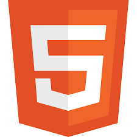

Mathis serra
Étudiant en informatique
20 ans
92 boulevard Sakakini
07.70.45.07.84
Francais
Objectif professionel
Je suis actuellment en première année de prepa informatique à l'école de la plateforme.
J'ai actuellement pour but de devenir développeur web back-end
et donc pouvoir acquerir énormement de connaissance en d'autres languages comme,
python, PHP, Ruby, ect.
Études
- Collège Yves Montant Brevet des collège : 2017
- Lycée Georges Duby Baccalauréat : 2021
- École de la plateforme Prépa informatique : 2023 - 2023
Expériences
- Rians
Ouvrier agricole : Juin 2020 - Septembre 2020 - Aix-en-Provence
Employé polivalent : Juin 2021 - Septembre 2021 - Marseille
Manager Commerce : Octobre 2021 - Maintenant 2023
Mes Compétences
- HTML 
- CSS

- BASH

- Python

- JavaScript